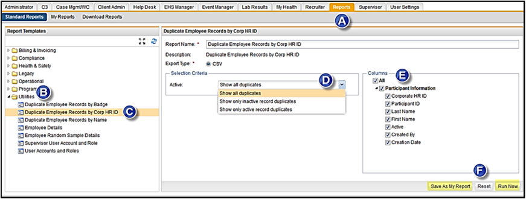
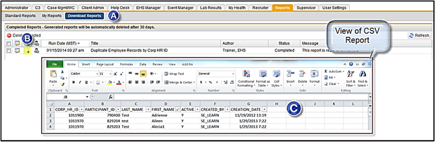
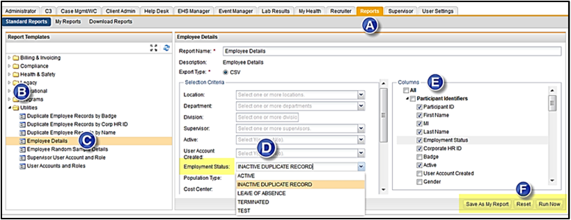

The reports that are located under the Standard Reports and in the Utilities foldercan give you a list of the accounts that have been deactivated and flagged as a Duplicate.
Click on the Reports tab.
In the left menu, choose Standard Reports > Utilities.
Click the Duplicate Employee Records by Corp HR ID report.
In the Selection Criteria > Active field, select Show all duplicates.
Select the Columns that you want to display in the report.
Click either Run Now or Save as My Report.

To view the report, click Download Reports.
The report will be processed and when ready the Status = "Completed" and the Message = "This report is ready to be viewed".
Click the View Report icon
Open the CSV report and you can use the Excel options to add filters or insert a Pivot table.

Employee Details Report
Click on the Reports tab.
Choose Standard Reports > Utilities.
Click the Employee Details report.
In the Selection Criteria > Employment Status field, select Inactive Duplicate Record.
Select any other criteria you want for this report, such as Location.
Select the Columns that you want to display in the report.
Click either Run Now or Save as My Report.

To view the report, click Download Reports.
The report will be processed and when ready the Status = "Completed" and the Message = "This report is ready to be viewed".
Click the View Report icon.
Open the CSV report and you can use the Excel options to add filters or insert a Pivot table.